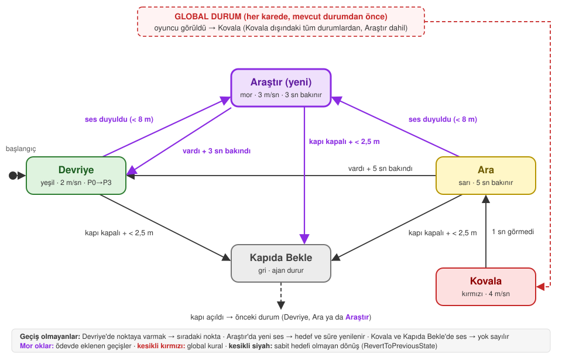
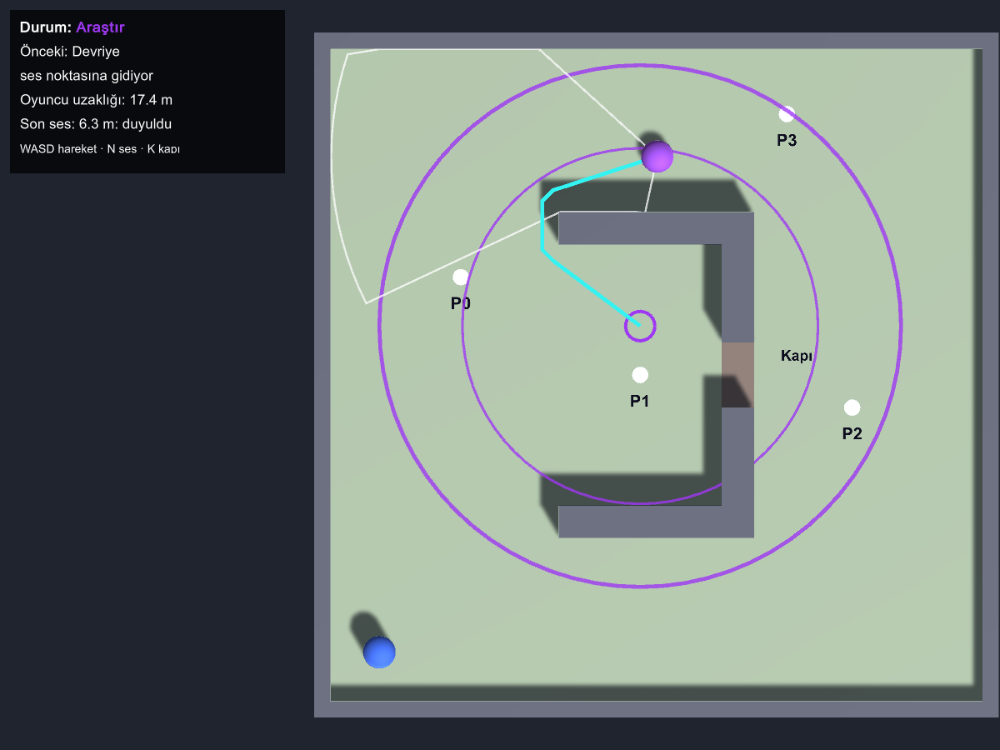
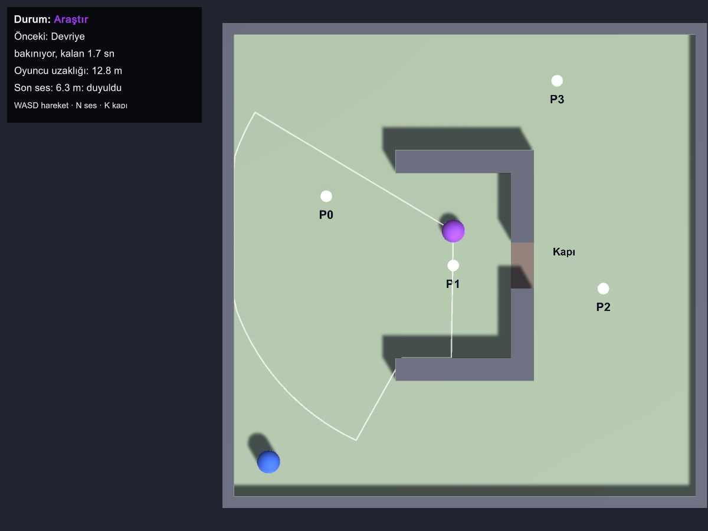
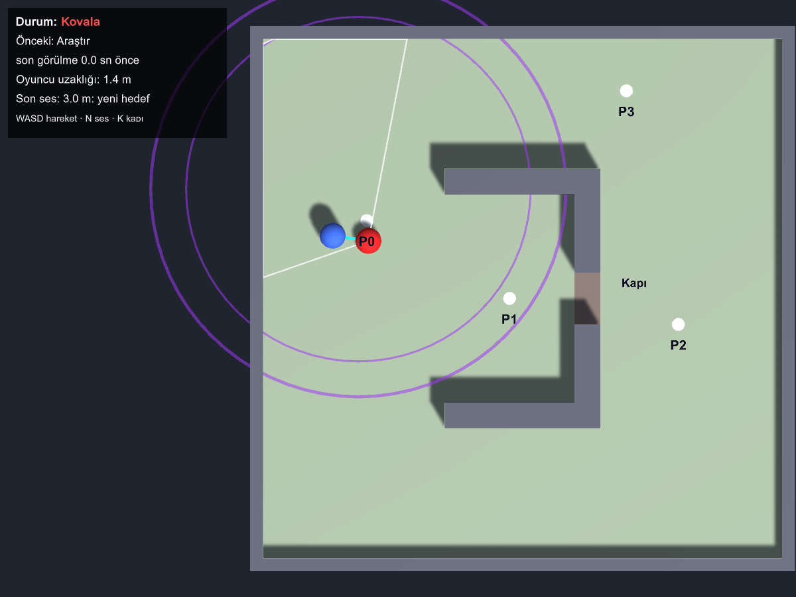
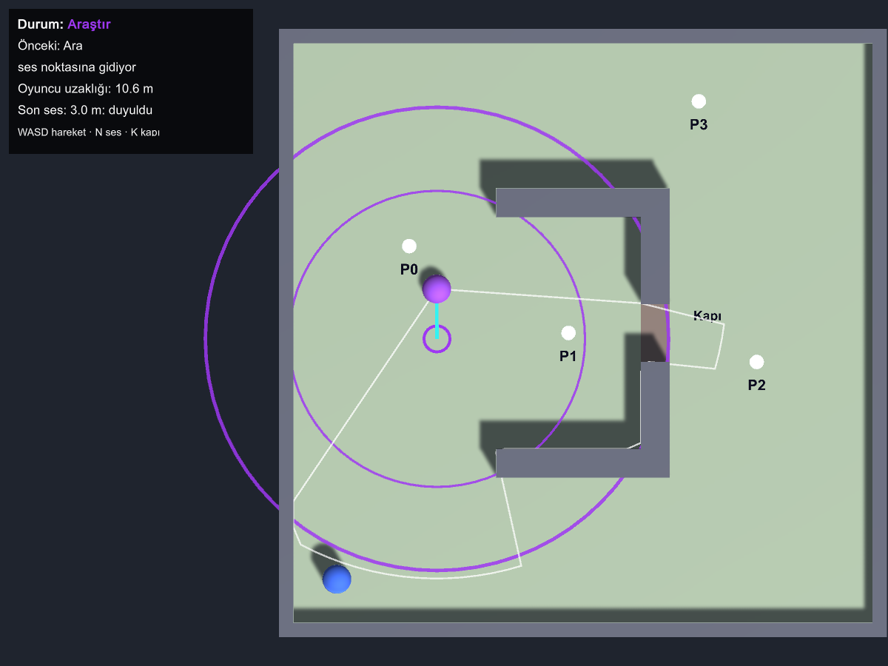
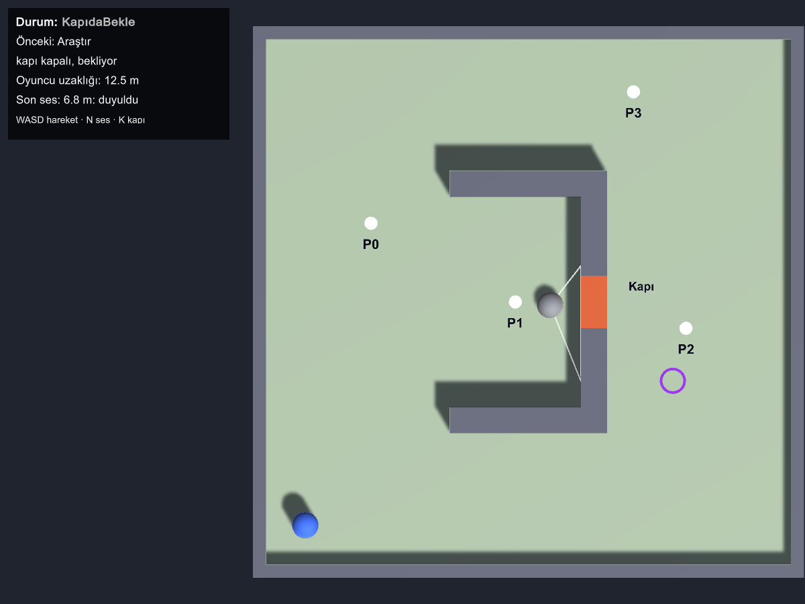

Derste kurulan dört durumlu bekçiye (Devriye, Kovala, Ara, Kapıda Bekle) beşinci bir durum, Araştır, eklendi. Oyuncu N tuşuna basınca bulunduğu yerde ses çıkar. Bekçi sese 8 m'den yakınsa, Devriye ya da Ara durumundaysa sesin geldiği noktaya gider, 3 sn bakınır ve devriyeye döner. Sahne 4–6. haftaların 20×20 alanıdır: batıya açık U engeli ve U'nun sırt duvarındaki 2 m'lik boşlukta 6. haftanın kayan kapısı (K). Devriye P0 → P1 → P2 → P3 döngüsü kapıdan geçer.
| Ödev kuralı | Nasıl yapıldı |
|---|---|
N tuşu, Input Actions'ta MakeNoise eylemi; eski Input Manager yok | InputSystem_Actions.inputactions içinde MakeNoise (Button, <Keyboard>/n). PlayerNoise.cs InputSystem.actions.FindAction("MakeNoise") ile okur. Proje ayarı: Active Input Handling = Input System Package (New). |
| 8 m'den yakınsa duyar, duvarlar sesi kesmez | Guard.HearNoise yatay mesafeyi hearingDistance = 8 ile karşılaştırır. Işın atılmaz, yani duvar hesaba girmez. |
| Devriye ya da Ara'da duyarsa Araştır'a geçer; Kovala'da görmezden gelir | HearNoise yalnızca FSM.IsIn(Patrol) || FSM.IsIn(Search) ise ChangeState(Investigate) der. Kovala'da (ve kapalı kapı önündeki Kapıda Bekle'de) yalnızca günlüğe yazar. |
| Ses noktasına gider, 3 sn bakınır, Devriye'ye döner | GuardInvestigate: Enter hedefi kurar, Execute vardıktan sonra 90°/sn dönerek investigateTime = 3 sn sayar, süre bitince ChangeState(Patrol). |
| Araştır'da oyuncuyu görürse Kovala, ek kod yok | GuardGlobal değişmedi. Kovala dışındaki her durumda olduğu gibi Araştır'dan da Kovala'ya geçirir. |
| Renk dört renkten farklı | Mor (0,62; 0,22; 0,95). Yeşil, kırmızı, sarı ve griden farklı. |
| Durum | Enter (bir kez) | Execute (her kare) | Exit (bir kez) |
|---|---|---|---|
| Araştır | Mor ol, hızı 3 m/sn yap, ses noktasını hedef al, bakınma sayacını 3 sn'ye kur | Kapı engel mi? → Kapıda Bekle. Vardıysan dönerek bakın; süre dolduysa → Devriye | Hızı 2 m/sn'ye geri al |
Enter'da değiştirilen tek ayar hızdır, Exit onu geri alır (5.2'deki kural). Araştır'dan Kovala'ya geçişte bu sıra önemlidir: önce Araştır.Exit hızı 2'ye indirir, sonra Kovala.Enter 4'e çıkarır. Testte Kovala'daki hız 4,0, devriyeye dönünce 2,0 ölçüldü. Bakınma sayacı durum nesnesinin içinde tutulur (6.5). Sayaç her Enter'da baştan kurulur, bu yüzden Kapıda Bekle'den Araştır'a dönen bekçi 3 sn'yi baştan sayar.
// Guard.cs (kısaltılmış): mesafe ve durum kontrolü burada, geçiş normal ChangeState public void HearNoise(Vector3 position) { Vector3 d = position - transform.position; d.y = 0f; if (d.magnitude > hearingDistance) return; // 8 m dışında: duymadı if (FSM.IsIn(Investigate)) // zaten Araştır'da: geçiş değil, { noisePosition = position; Investigate.Retarget(this); return; } // yeni hedef if (!FSM.IsIn(Patrol) && !FSM.IsIn(Search)) return; // Kovala, Kapıda Bekle: yok say noisePosition = position; FSM.ChangeState(Investigate); }
Araştır'dayken ikinci bir ses gelirse bu bir geçiş sayılmaz. ChangeState aynı duruma geçişi zaten reddeder (next == Current). Bekçi durumunu korur, yalnızca hedefi ve bakınma süresi yenilenir. Bu, devriye noktasına varınca sıradaki noktayı hedef almaya (3.2) benzer.

Kaynak: rapor/durum-diyagrami.svg. Her ok GuardStates.cs içindeki bir ChangeState satırına karşılık gelir; global ok GuardGlobal'e, kesikli dönüş RevertToPreviousState'e.
| Mevcut durum | Koşul | Sonraki durum |
|---|---|---|
| Herhangi biri (Kovala hariç)kapsam genişledi | Oyuncu görüldü (global kural) | Kovala |
| Devriye | Kapı kapalı ve kapıya 2,5 m'den yakın | Kapıda Bekle |
| Devriyeyeni | Ses duyuldu (sese 8 m'den yakın) | Araştır |
| Kovala | Oyuncu 1 sn'den uzun süredir görünmüyor | Ara |
| Ara | Kapı kapalı ve kapıya 2,5 m'den yakın | Kapıda Bekle |
| Arayeni | Ses duyuldu (sese 8 m'den yakın) | Araştır |
| Ara | Son görülen noktaya vardı ve 5 sn bakındı | Devriye |
| Araştıryeni | Kapı kapalı ve kapıya 2,5 m'den yakın | Kapıda Bekle |
| Araştıryeni | Ses noktasına vardı ve 3 sn bakındı | Devriye |
| Kapıda Bekledeğişti | Kapı açıldı | Önceki durum (Devriye, Ara ya da Araştır) |
Geçiş olmayan durumlar: Kovala'da ses → görmezden gelinir (bekçi oyuncuyu zaten görüyor). Kapıda Bekle'de ses → görmezden gelinir (kapalı kapının önünde bekliyor; ödev yalnızca Devriye ve Ara'yı sayıyor). Araştır'da yeni ses → durum aynı, hedef ve süre yenilenir. Araştır'a kapı satırı ödev metninde yoktu. Ama Araştır da yürüyen bir durum; bu satır olmasa bekçi kapalı kapıya sürtünüp kalırdı. Bu yüzden Devriye ve Ara'daki satır Araştır'a da eklendi.
Deneme oyunun derlenmiş sürümünde yapıldı. N ve K tuşları sanal bir klavye ile Input System'e gönderildi, yani gerçek MakeNoise ve ToggleDoor eylemleri çalıştı. Oyuncunun yeri tekrarlanabilirlik için betikle değiştirildi. Altı adımda 15 kontrolün 15'i geçti. Aşağıda FSM ve ses satırları var; test betiğinin satırlarıyla birlikte tam günlük rapor/konsol-gunlugu.txt dosyasında.
[0.0 sn] - → Devriye 1) uzak ses [1.0 sn] Oyuncu ses çıkardı: (1.5; 1.5) [1.0 sn] Ses 12.5 m uzakta, 8 m sınırının dışında: duyulmadı (Devriye) 2) Devriye'de ses: oyuncu U'nun içinde, bekçi üst kolun kuzeyinde (arada duvar var) [14.7 sn] Oyuncu ses çıkardı: (9.5; 11.5) [14.7 sn] Ses duyuldu (6.3 m, Devriye durumunda) [14.7 sn] Devriye → Araştır [21.7 sn] Araştır → Devriye (vardı, 3,0 sn bakındı) 3) Kovala'da ses [23.2 sn] Devriye → Kovala [23.7 sn] Oyuncu ses çıkardı: (4.9; 12.8) [23.7 sn] Ses duyuldu (0.4 m) ama Kovala durumunda: görmezden gelindi [24.7 sn] Kovala → Ara 4) Ara'da ses, ardından Araştır'da ikinci ses [25.5 sn] Oyuncu ses çıkardı: (5.0; 9.8) [25.5 sn] Ses duyuldu (3.0 m, Ara durumunda) [25.5 sn] Ara → Araştır [26.1 sn] Oyuncu ses çıkardı: (3.7; 14.2) [26.1 sn] Ses duyuldu (3.0 m), zaten Araştır'da: hedef ve bakınma süresi yenilendi 5) Araştır'da oyuncu görünüyor [26.9 sn] Araştır → Kovala (global kural) [28.2 sn] Kovala → Ara [33.2 sn] Ara → Devriye 6) Araştır'da kapı [37.7 sn] Oyuncu ses çıkardı: (15.5; 7.0) [37.7 sn] Ses duyuldu (6.8 m, Devriye durumunda) [37.7 sn] Devriye → Araştır [38.1 sn] Araştır → KapıdaBekle (K, bekçi kapıya 2,3 m) [40.6 sn] KapıdaBekle → Araştır (K, önceki duruma dönüş) [45.9 sn] Araştır → Devriye





Kullanılabilirdi. Ses gelince lastSeenPosition = sesin yeri yapıp Ara'ya geçmek yeterliydi. Ara zaten "bir noktaya git, bakın, devriyeye dön" davranışını yapıyor.
Avantaj: Yeni sınıf yazılmaz, durum sayısı dörtte kalır. Diyagram ve geçiş tablosu sade kalır: 7.1'deki formüle göre olası yönlü geçiş sayısı 5 durumda 5 × 4 = 20, 4 durumda 4 × 3 = 12. Kapı kuralı ve dönüş kuralı Ara'da zaten yazılı olduğu için Araştır'da tekrar edilmezdi.
Dezavantaj: İki farklı anlam aynı durumda karışır. lastSeenPosition artık "oyuncunun görüldüğü yer" değildir; sarı gizmo ve sonraki Kovala → Ara geçişi yanlış veriyle çalışabilir. Ödevin istediği farklı süre (3 sn / 5 sn) ve farklı renk için Ara'nın içine "sesten mi geldim?" bayrağı gerekir; 2. bölümdeki bool sorunu durumun içine geri gelir. Ayrıca bizim StateMachine sınıfına özgü bir hata çıkar: Ara'dayken ses duyulunca istenen geçiş Ara → Ara olur. ChangeState next == Current olduğu için bunu reddeder. Enter çalışmaz, bakınma süresi sıfırlanmaz, hedef değişmez; bekçi sesi duymamış gibi davranır. Ayrı bir Araştır durumuyla bu sorun hiç oluşmaz.
Assets/Scripts/Guard/GuardStates.cs: beş durum + global durum; GuardInvestigate ödevin yeni sınıfı.Assets/Scripts/Guard/Guard.cs: HearNoise, hearingDistance, investigateTime, investigateSpeed, noisePosition.Assets/Scripts/PlayerNoise.cs: ses betiği (N → MakeNoise → guard.HearNoise); Assets/InputSystem_Actions.inputactions.Assets/Scripts/FSM/State.cs, StateMachine.cs: ders notundaki haliyle, değişiklik yok. SlidingDoor.cs: IsOpen satırı (8.6).rapor/durum-diyagrami.svg (.png), rapor/konsol-gunlugu.txt, screenshots/01…07.